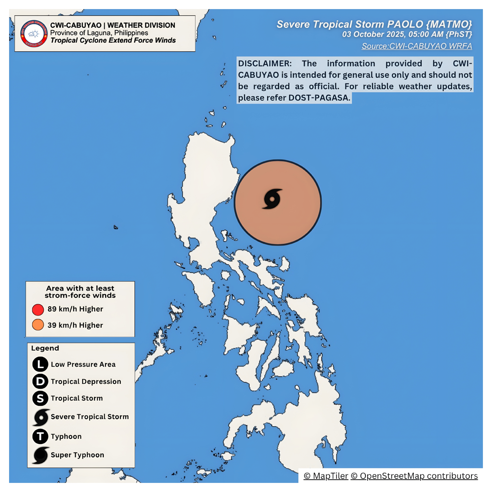
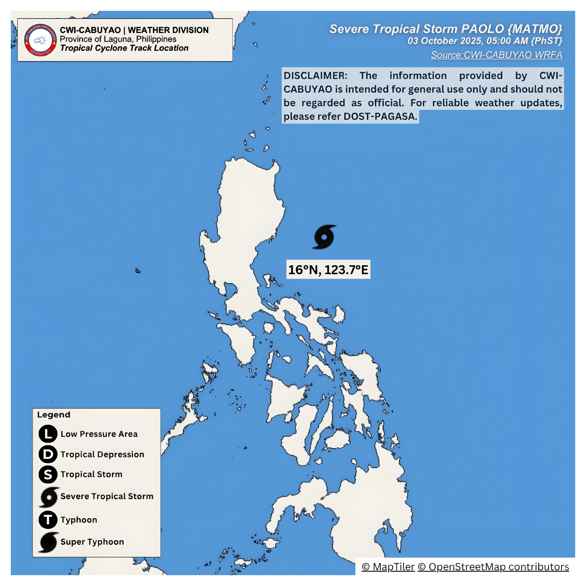
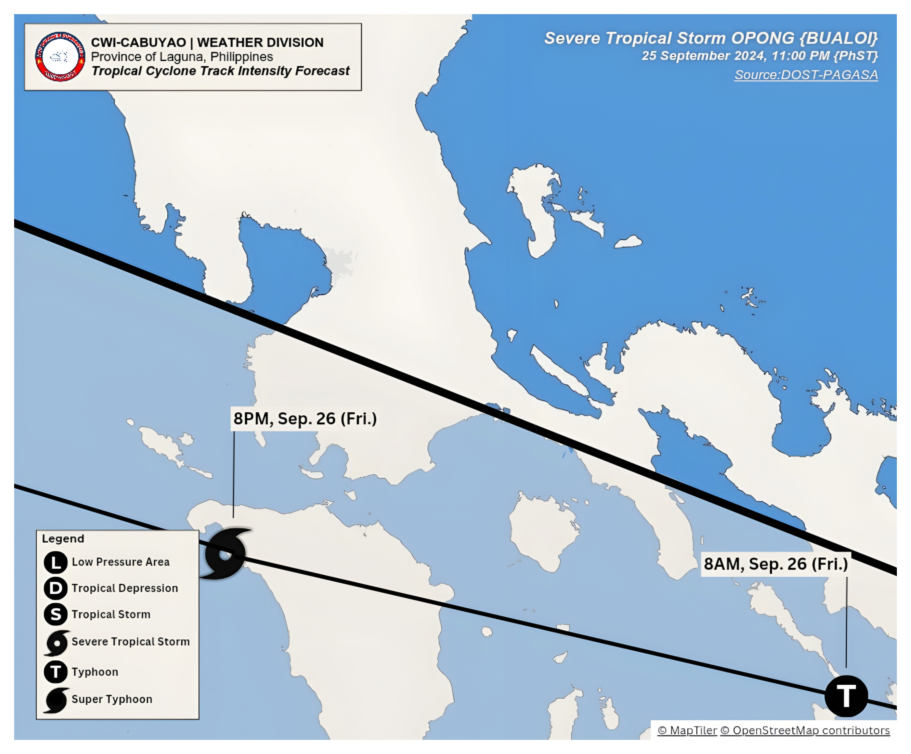

CABUYAO CITY WEATHER INFORMATION
PROVINCE OF LAGUNA, PHILIPPINES
information.cwicabuyao.gov.ph@gmail.com
☰ Menu
×
• WEATHER
Thunderstorm Warning
Rainfall Warning
Satellite Imagery
TC Information
• CLIMATE
• HYROLOGICAL
• ASTRO
TROPICAL CYCLONE INFORMATION
STS OPONG {BUALOI}
Located at
11.9°N, 126.1°E
Center Pressure:
975hpa
Maximum Winds:
120 km/h
Gustained Winds:
165 km/h
Rapid Intensification:
HIGH CHANGE
Movement:
WEST-NORTHWESTWARD 25 km/h
Extent of Tropical Cyclone Winds:
up to 460 km from the center
Current Conditions
Latest Satellite Image
Extent Force of Wind

Latest Location

Track Foreacst
Track Foreast Zoom In

Hourly Rainfall Forecast
Surface Wind and Direction
×